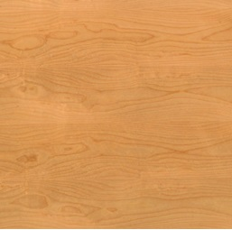

Abedul

La albura y el duramen tienen un color blanco amarillanto a blanco anaranado, su fibra es recta en algunos casos puede llegar a tener forma ondulada.
Es una madera que presenta poca resistencia a los hongos por lo que requere tratamientos especiales.
En el aspecto de acabados es relativamente buena solo que los tites los recibe de una manera irregular.
El secado es bastante sencillo y tambien se realiza de una manera rapida.
Principalmente es usada para muebles finos de interior, muebles torneados y tallados, molduras, chapas decorativas y tablero contraparchado ademas de varios articulos deportivos.